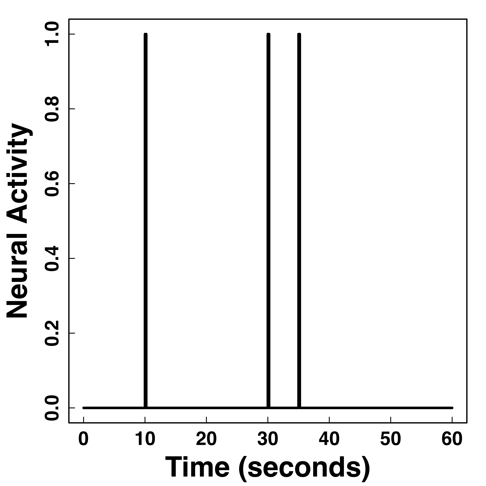
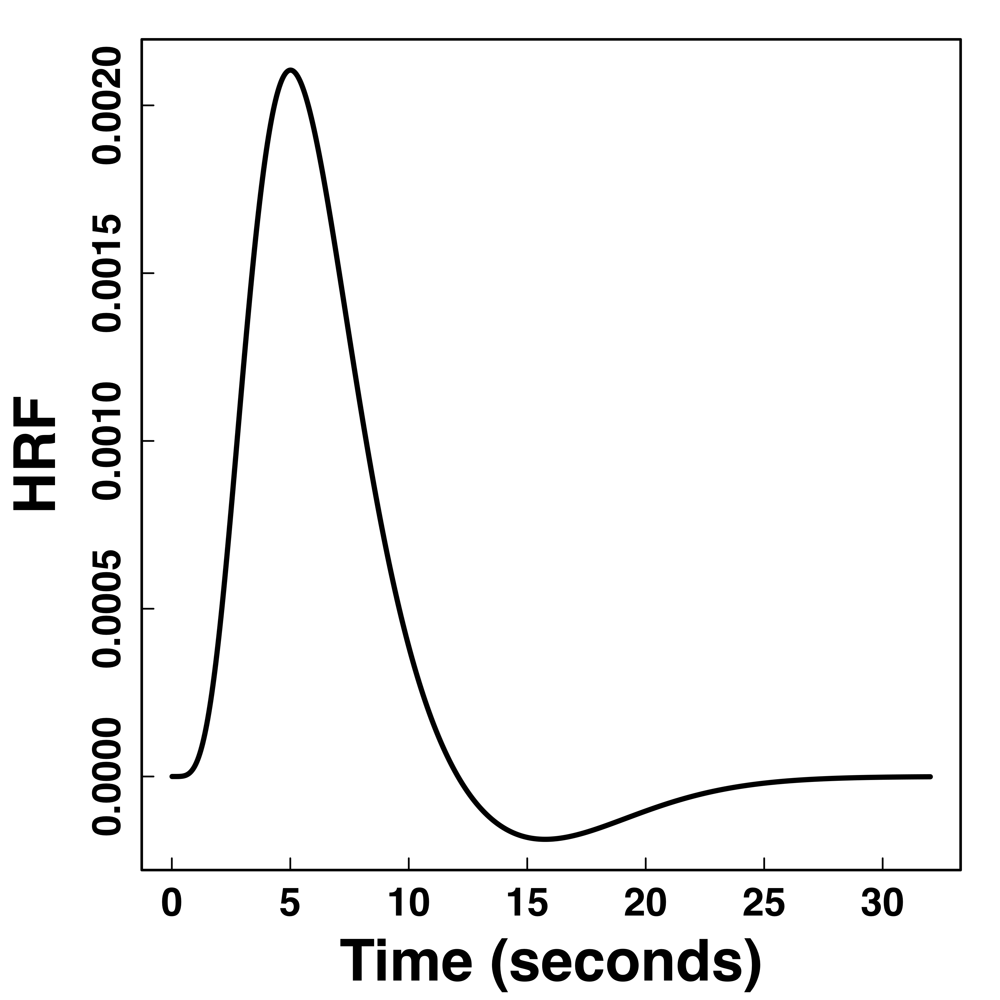
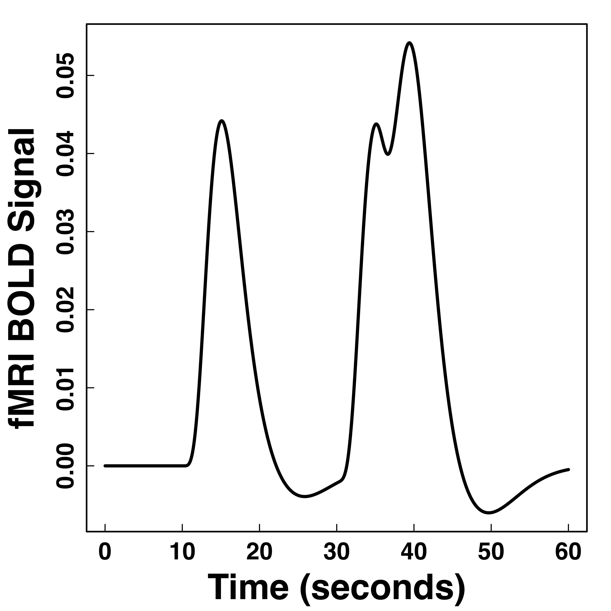
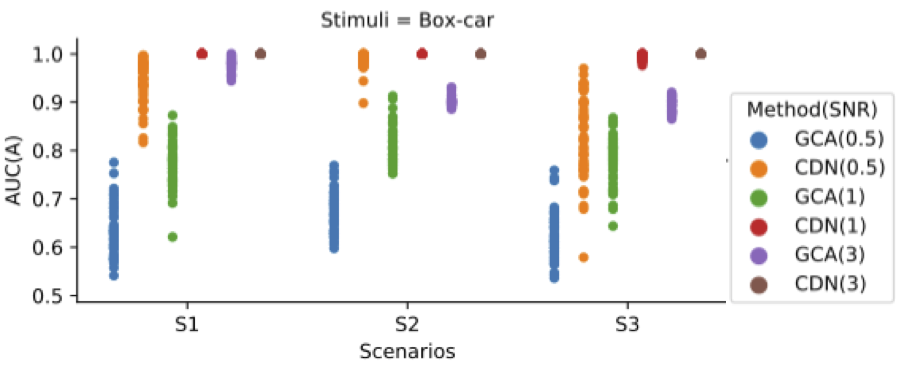
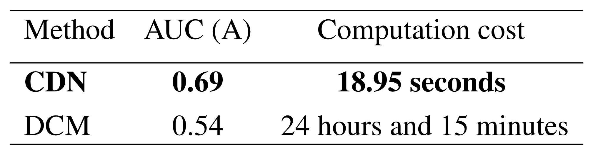
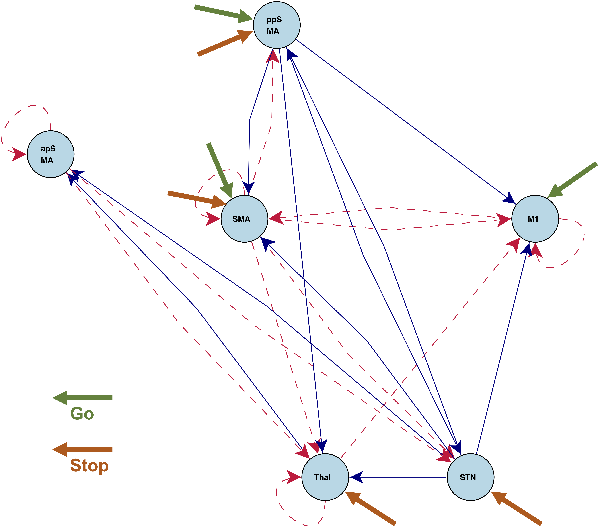
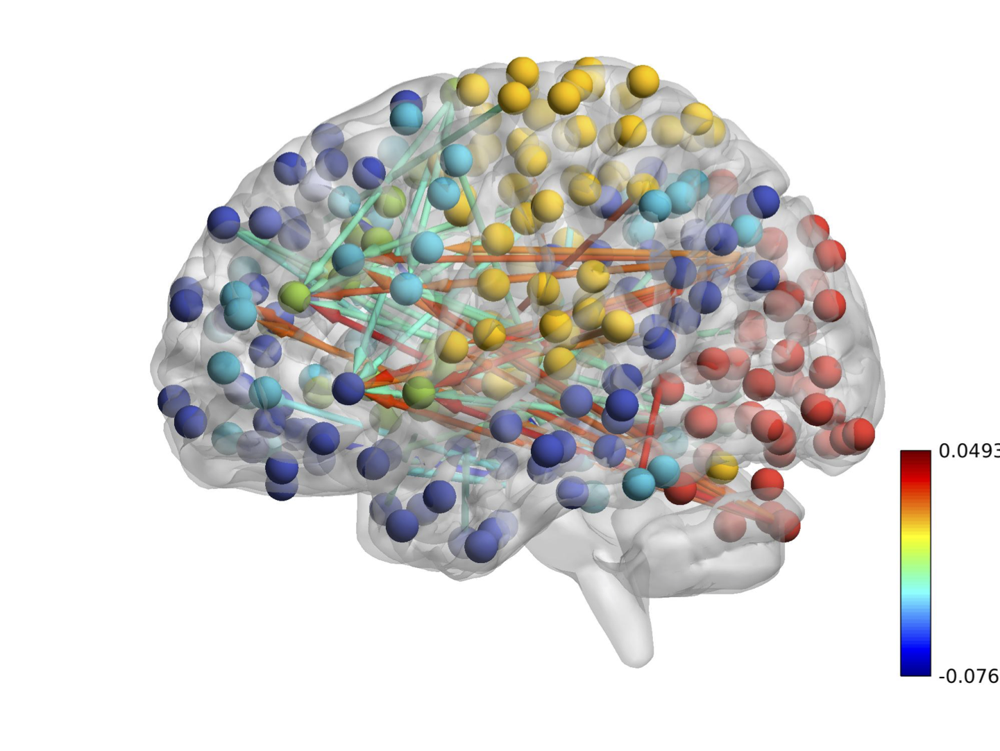

Statistical Methods for Unraveling Large-scale Brain Dynamics
Xi (Rossi) LUO
Department of Biostatistics
Center for Statistical Sciences
Computation in Brain and Mind
Brown Institute for Brain Science
Brown Data Science Initiative
ABCD Research Group

June 7, 2018
Funding: NIH R01EB022911, P20GM103645, P01AA019072, P30AI042853; NSF/DMS (BD2K) 1557467
Slides viewable on web:
bit.ly/utbiosds

$10^{11}$ neurons
Ex: DTI, DWI, ...
or optogenetics modeling Luo et al, Stat in Med, 16
$10^4$ genes, $10^6$ SNPs
Ex: Gene networks Cai, Liu Luo, JASA 11; Liu & Luo, JMVA, 15
$10^6$ functional MRI voxels Luo et al, JASA, 12
fMRI Experiments


- Task fMRI: performs tasks under brain scanning
-
Randomized stop/go task:- press button if "go";
- withhold pressing if "stop"
- Resting-state: "do nothing" during scanning
fMRI data: blood-oxygen-level dependent (BOLD) signals from each
Data Matrix
- $X_{n \times d}$: $n$ observations from $d$ voxels
- Functional segregation: voxel clusters (ROIs)
- Dimension reduction: $X_{n\times p}$—averages from $p$ ROIs
- Reduced computation: $p \approx 10^2 \ll d \approx 10^6$
- Statistically: introduce bias and reduce efficiency Luo, 14
- Scientifically: ROI definitions can vary greatly
- Still a popular approach due to simplicity


Complex Data: fMRI Studies
Sub 1, Sess 1

Time 1
2
…
~200
⋮
Sub i, Sess j
…
⋮
Sub ~100, Sess ~4
…
$1000 \times 4 \times 300 \times 10^6 \approx 1 $ trillion data points
Scientific and Statistical Problems
- Which brain areas process the stimulus information?
- Uncovering this leads to better disease prediction Luo et al, Brain, 13
- Causal inference for complex outcomes (e.g. time series) Luo et al, JASA, 12
- How do the areas collaborate with each other?
- Hot topic in neuroscience, e.g. using correlations between areas
- Algebraic precision matrix estimation Cai, Liu Luo, JASA 11; Liu & Luo, JMVA, 15
Covariance matrix based clustering Bunea, Giraud, Luo, et, al
- Studying the above two together?
Mediation analysis , with student Yi Zhao JSM, ENAR student paper awards, and most recently Johns Hopkins colleagues Caffo, LindquistCausal ODE modeling , with student Xuefei Cao JSM award, and Brown Math colleague Sandstede
Covariance Based Clustering
Problem
- Let ${X} \in \real^p$ be a zero mean random vector
- Divide variables into partitions/clusters
- Example: $\{ \{X_1, X_3, X_7\}, \{X_2, X_5\}, \dotsc \}$
- Theoretical: define
uniquely identifiable partition $G$ such that all $X_a$ in $G_k$ are statistically"similar" - DS: find
"helpful" partition that show cov patterns
Related Methods
- Clustering: Kmeans and hierarchical clustering
- Advantages: fast, general, popular
- Limitations: low signal-noise-ratio, theory
- Usually cluster two variables without examining all other variables
- Community detection: huge literature see review Newman, 2003 but start with observed
adjacency matrices
Matrix Representation
$$ X_{n\times p}=\underbrace{Z_{n\times k}}_\text{Source/Factor} \quad \underbrace{G_{k\times p}}_\text{Mixing/Loading} + \underbrace{E_{n\times p}}_{Error} \qquad Z \bot E$$
- Clustering: $G$ is $0/1$ matrix for $k$ clusters/ROIs
- Decomposition: under
conditions - PCA/factor analysis: orthogonality
- ICA: orthogonality → independence
- matrix decomposition: e.g. non-negativity (NMF)
- We will introduce a new structure for $Z$ and provide a more general clustering model
"Network of Networks"
- Hierarchical Covariance Model (a latent var model)
- Some ongoing research related to this model
- How to cluster variables together?
- How to estimate cluster signals?
- How to estimate between-cluster connections?
- This talk on how to
group(clustering) nodes- Usually NP-hard and limited theory
- $Z$ can be correlated

Example: Cor after Grouping by Clusters


Ours yields stronger
Color bars: variable groups/clusters
Off-diagonal: correlations across clusters
Model: $G$-Block Cov
-
Set $G=\ac{\ac{1,2};\ac{3,4,5}}$, $X \in \real^p$ has $G$-block cov
$$\Sigma =\left(\begin{array}{ccccc} {\color{red} D_1} & {\color{red} C_{11} }&C_{12} & C_{12}& C_{12}\\ {\color{red} C_{11} }&{\color{red} D_1 }& C_{12} & C_{12}& C_{12} \\ C_{12} & C_{12} &{\color{green} D_{2}} & {\color{green} C_{22}}& {\color{green} C_{22}}\\ C_{12} & C_{12} &{\color{green} C_{22}} &{\color{green} D_2}&{\color{green} C_{22}}\\ C_{12} & C_{12} &{\color{green} C_{22}} &{\color{green} C_{22}}&{\color{green} D_2} \end{array}\right) $$ - Matrix math: $\Sigma = G^TCG + d$
- We allow $|C_{11} | \lt | C_{12} |$ or $C \prec 0$
- Kmeans/HC leads to block-diagonal cor matrices (permutation)
- Clustering based on $G$-Block
patterns shown above- Generalizing $G$-Latent which requires $C\succ 0$
Minimum $G$ Partition
New Metric:
CORD
- First, pairwise correlation distance (like Kmeans)
- Gaussian copula: $$Y:=(h_1(X_1),\dotsc,h_p(X_p)) \sim N(0,R)$$
- Let $R$ be the correlation matrix
- Gaussian: Pearson's
- Gaussian copula: Kendall's tau transformed, $R_{ab} = \sin (\frac{\pi}{2}\tau_{ab})$
- Second, maximum difference of correlation distances $$\d(a,b) := \max_{c\neq a,b}|R_{ac}-R_{bc}|$$
- Third, group variables $a$, $b$ together if $\d(a,b) = 0$
The enemy of my enemy is my friend!
Image credit: http://sutherland-careers.com/
Algorithm: Main Idea
- Greedy: one cluster at a time, avoiding NP-hard
- Cluster variables together if CORD metric $$ \max_{c\neq a,b}|\hat{R}_{ac}-\hat{R}_{bc}| \lt \alpha$$ where $\alpha$ is a tuning parameter
- $\alpha$ is chosen by theory or CV
Theory: Condition
Theory: Consistency
Theory: Minimax
Simulation: Exact Recovery


Different models for $C$="$\cov(Z)$" and $\alpha = 2 n^{-1/2} \log^{1/2} p$
Vertical lines: theoretical sample size based on our lower bound
HC and Kmeans fail even if inputting the true $K$.
fMRI Data: Test Prediction/Reproducibilty
- Find partitions using the first session data
- Average each block cor to improve estimation
- Compare with the cor matrix from the second scan $$ \| Avg_{\hat{G}}(\hat{\Sigma}_1) - \hat{\Sigma}_2 \|$$ where we used $\hat{G}$ to do block-averaging.
- Difference is
smaller if clustering $\hat{G}$ isbetter

Vertical lines: fixed (solid) and data-driven (dashed) thresholds

Clusters reasonable for our visual-motor task!
Discussion
- Cov + clustering = Connectivity + ROI
- Identifiability, accuracy, optimality
- $G$-models: $G$-latent, $G$-block, $G$-exchangeable
- New metric, method, and theory
- Paper: google
"cord clustering" (arXiv 1508.01939) - R package:
cord on CRAN
Large-scale Mediation Analysis
Math Problem:
Infer Causality from Observational Data Only

Many unmodeled factors: vascular, respiratory, mind wandering, ...
Stop/Go Task fMRI
- Task fMRI: performs tasks under brain scanning
-
Randomized stop/go task:- press button if "go";
- withhold pressing if "stop"
- Not resting-state: "rest" in scanner
Raw Data: Motor Region


Network Model with Stimulus

Goal: quantify effects stimuli → preSMA → PMC regions Duann, Ide, Luo, Li (2009). J of Neurosci
Model: Mediation Analysis and SEM
 $$\begin{align*}M &= Z a + \overbrace{U + \epsilon_1}^{E_1}\\ R &= Z c + M b + \underbrace{U g + \epsilon_2}_{E_2}, \quad \epsilon_1 \bot \epsilon_2\end{align*}$$
$$\begin{align*}M &= Z a + \overbrace{U + \epsilon_1}^{E_1}\\ R &= Z c + M b + \underbrace{U g + \epsilon_2}_{E_2}, \quad \epsilon_1 \bot \epsilon_2\end{align*}$$
-
Indirect effect: $a \times b$; Direct effect: $c$ - Correlated errors: $\delta = \cor(E_1, E_2) \ne 0$ if $U\ne 0$
Mediation Analysis in fMRI
- Mediation analysis (usually assuming $U=0$)Baron&Kenny, 86; Sobel, 82; Holland 88; Preacher&Hayes 08; Imai et al, 10; VanderWeele, 15;...
- Parametric Wager et al, 09 and functional Lindquist, 12 mediation, under (approx.) independent errors
- Stimulus $\rightarrow$ brain $\rightarrow$
user reported ratings , one brain mediator - Assuming $U=0$ between ratings and brain
- Stimulus $\rightarrow$ brain $\rightarrow$
- Multiple mediator and multiple pathways
- Dimension reduction by arXiv1511.09354Chen, Crainiceanu, Ogburn, Caffo, Wager, Lindquist, 15
- Pathway Lasso penalization Zhao, Luo, 16
- This talk: causal estimation under
$U\ne 0$ (its effect size $\delta \ne 0$) when modelingtwo brain regions
New Pathway Measure
=Activation+Connectivity
- Activation: stimulus $\rightarrow$ brain region activity
- Connectivity: one brain region $\rightarrow$ another region
- Whether not two or more brain regions "correlate"
- Pathway: stimulus $\rightarrow$ brain region A $\rightarrow$ region B
- Strong path: strong activation
and strong conn - Zero path: zero activation
or zero conn, including- Zero activation + strong conn = zero
- Strong activation + zero conn = zero

Scientific motivations for $\delta \ne 0$ or unmeasured confounding
Existing Approaches for $\delta \ne 0$
- Assuming $\delta=0$
- Assumption "too strong" for most cases Imai et al, 10
- Sensitivity plot: "guessing" $\delta$
- Simplify models: e.g. $c=0$ via instrumental variable
- Adjust (e.g. motion) if possible Sobel, Lindquist, 14
- Use Bayesian prior or regularization
- We will introduce a data-driven framework to estimate $\delta$
Method: Multilevel Likelihood
- Recall 3-level data: subjects, sessions, trials
-
Correlated mediation model for trials, mixed model for mediation effects among higher levels - We will optimize the multilevel likelihood $$ \underbrace{\sum_{\mbox{Sub }i} \sum_{\mbox{Sess }k}\ell(\mbox{brain activities in trials} | A_{ik}, B_{ik}, C_{ik}, \Theta_{ik})}_{\mbox{first level likelihood}} \\ + \underbrace{\sum_i \ell(A_{i1},\dotsc,A_{iK}, B_{i1},\dotsc | A, B, C, \Theta)}_{\mbox{second and third level likelihood}}$$
Challenges
- Unmeasured confounding and causal inference
- Usually impossible in many other statistical models
- Prove our model is identifiable or our multilevel likelihood has a unique maximum
- Usually the likelihood is mutlimodal in many other cases
- Prove our MLE is unbiased and consistent under minimal assumptions
Causal Interpretation
- We prove causal using potential outcomes Neyman, 23; Rubin, 74
- Causal inference intuition $$Z \rightarrow \begin{pmatrix} M \\ R \end{pmatrix}$$
- Others assume (e.g. randomized brain stimulation) $$r_{i}\left(z_{i}^{\prime},m_{i}\right)\bot m_{i}\left(z_{i}\right)|Z_{i}=z_{i}$$
- We do
not need this assumption when we can estimate $\delta$
Some Details about Our Model
- Level-1 model for each sub and each sess
$$\begin{pmatrix}{M}_{ik} & {R}_{ik}\end{pmatrix}=\begin{pmatrix}{Z}_{ik} & {M}_{ik}\end{pmatrix}\begin{pmatrix}{a}_{ik} & {b}_{ik}\\ 0 & {c}_{ik} \end{pmatrix}+\begin{pmatrix}{E}_{1_{ik}} & {E}_{2_{ik}}\end{pmatrix}$$ - Limited variability in $\delta$ across sub/sess
- Random effect model cf AFNI, FSL, SPM, and etc $$\begin{pmatrix}{A}_{ik}\\ {B}_{ik}\\ {C}_{ik} \end{pmatrix}=\begin{pmatrix}{A}\\ {B}\\ {C} \end{pmatrix}+\begin{pmatrix}\alpha_{i}\\ \beta_{i}\\ \gamma_{i} \end{pmatrix}+\begin{pmatrix}\epsilon_{ik}^{{A}}\\ \epsilon_{ik}^{{B}}\\ \epsilon_{ik}^{{C}} \end{pmatrix}=b+u_{i}+\eta_{ik}$$
Algorithm 1: Two-stage Fitting
- Stage 1: fit $(\hat{A}_{ik}(\delta), \hat{B}_{ik}(\delta), \hat{C}_{ik}(\delta))$ for each $i$ and $k$ for varying $\delta$ using our step 1 single-level model
- Stage 2: Find $\hat{\delta}$ that $(\hat{A}_{ik}(\hat{\delta}), \hat{B}_{ik}(\hat{\delta}), \hat{C}_{ik}(\hat{\delta}))$ yields maximum likelihood for random effects model
- Small-scale computing
Theory for SEM and Confounding
Contributions: data-driven estimation of confounding and consistency proof for SEM
Alternative Likelihood under Our Framework
- Optimize all parameters in joint likelihood $$\begin{align*} &\sum_{i=1}^{N}\sum_{k=1}^{K}\log\Pr\left(R_{ik},M_{ik}|Z_{ik},\delta,b_{ik},\sigma_{1_{ik}},\sigma_{2_{ik}}\right)\quad \mbox{Data}\\ & + \sum_{i=1}^{N}\sum_{k=1}^{K}\log\Pr\left(b_{ik}|u_{i},b,\boldsymbol{\Lambda}\right)\quad \mbox{Subject variation}\\ & +\sum_{i=1}^{N}\log\Pr\left(u_{i}|\boldsymbol{{\Psi}}\right) \quad \mbox{Prior}\end{align*}$$
- Large computation: $5NK + 3N + 11 > 2000$ paras
Algorithm 2
Leverage conditional convexity to reduce computation
details in our paperSimulations

Low bias for $\delta$

Low bias for effects
Our large-scale multilevel model
Bias can be large (100%) without estimating $\delta$
Real Data: Identifiability and Bias

Unique $\delta$ for ML

Estimates doubled
Discussion
- Leverage complex data for causal fMRI modeling
- Approach:
-
large-scale causal SEM - big multilevel data
-
machine learning/optimization
-
- Theory: identifiability, convergence, and computation
- Result: reduced bias and causal interpretation
- Extensions: functional, time series, multiple paths
- CRAN pkgs:
macc ,gma ,cfma , references within
Causal Dynamic Network Modeling
ODE Modeling for fMRI
- Hidden neuronal states: multivariate $Z_t$ across time $t$, following a
network ODE model - Observed fMRI data: $Y_t = g(Z_t, Z_{t-1}, \dotsc)$
- Common choice of $g$ is a convolution with a known kernel $h(t)$
- Neuroscientists want to know neuronal
activations due to stimuli andconnections between areas - Existing approach: Dynamic Causal Modeling Friston et al, 2003 (> 3000 citations)
Challenges for DCM Friston et al, 03
- Computationally expensive
- Bayesian model comparison over exponentially many network models
- Only feasible for small networks (~5 nodes) or for comparing a few hypotheses
Functional/Dynamic Data Analysis
- Usually, observed data $$ y(t) = z(t) + \epsilon(t) $$ and latent $z(t)$ follows an ODE model of interest
- Various approaches for estimating the ODE parameters: nonlinear least squares Xue, Miao, Wu, 10, two-stage smoothing Varah, 82, principal differential analysis Ramsey, 96, Bayesian Girolami, 08
- For example, two-stage smoothing approaches not directly applicable to convoluted fMRI data $$ y(t) = \int z(t-u)h(u) du + \epsilon(t) $$
Hemodynamic Response Function (HRF)
  fMRI responses last long (~30 seconds) after neural activities
Model and Method
- Neural signal model: $$ \frac{d\bm{x}(t)}{dt}=\bm{A}\bm{x}(t)+\sum_{j}u_j(t)\bm{B_j}\bm{x}(t)+\bm{C}\bm{u}(t) $$
- fMRI hemodynamic responses: $$ \bm{y}(t_i) =\int h(s)\bm{x}(t_i-s) ds + \bm{\epsilon} (t_i) $$
- Minimize the following \[\begin{multline*} \scriptstyle l(\bm{x},\bm{\theta})=\sum_{t_i} \| \bm{y}(t_i)-h \star \bm{x}(t_i)) \|^2 \\ \scriptstyle +\lambda\int \left \| \frac{d \bm{x} (t) } {dt} - (A \bm{x}(t)+\sum_{j} u_j(t) \bm{B_j} \bm{x}(t)+ \bm{C}\bm{u}(t)) \right\|^2 dt + {pen}(A,B,C)\\ \end{multline*} \]
Algorithm
- We prove conditional convexity
- Iterative block coordinate descent algorithm
- We prove explicit update formulas (no numerical optimization algorithms needed)
Simulation: vs GCA/VAR
Our
Simulation: vs DCM
Our
Real Data: 6 Brain Regions
Provide better understanding of the brain mechanisms
Real Data: 264 Brain Regions
Sparse CDN uncovers a
Discussion
- Joint optimization method for infer ODE networks
- Flexible models for observations from ODEs
- Computationally efficient for large-scale modeling
- Python pacakge:
CDN from github.com/rluo
Samples of Other Projects
- CVD/T2D risk prediction using genetic, environmental, and life style factors
- Predicting real-time risky behaviors using smart phone tracking and interventions
- Regression with covariance outcomes
- Gene/brain covriances predicted by covaraites
- Mediation for imaging-genetics data
- Cognitive outcomes: nature vs nurture?
- Deep learning: health risk prediction